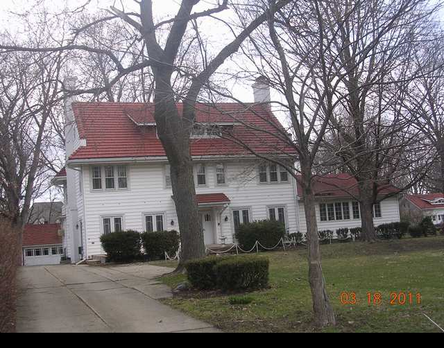

1406 E. Washington

- Dr. Robert A. Noble Residence (1912)
- American Arts and Crafts, of the type, exhibits the finest materials, beautifully made siding, tile roof, all on a colonial center hall plan.
- The addition on right was added later.
- Noble was the son of physician, MD from Northwestern additional studies in Vienna, practiced with his father.
- GJ Mecherle founder of State Farm lived here in the late 1930's.